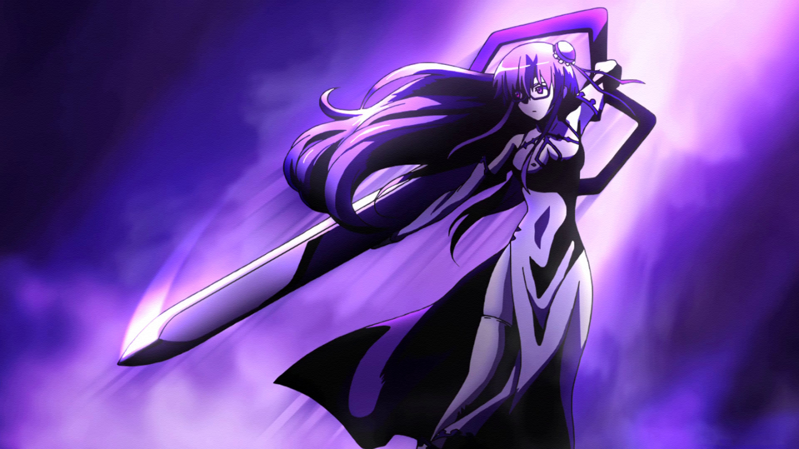
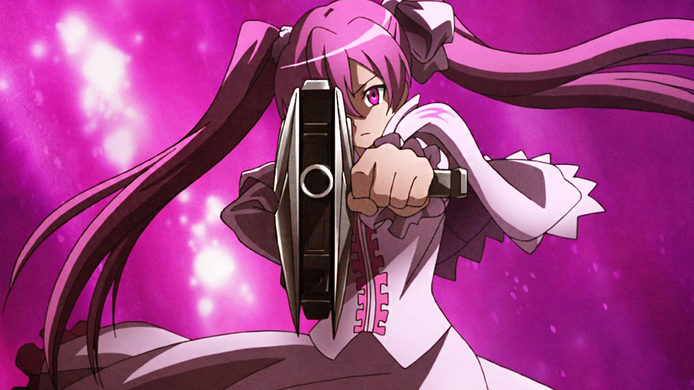
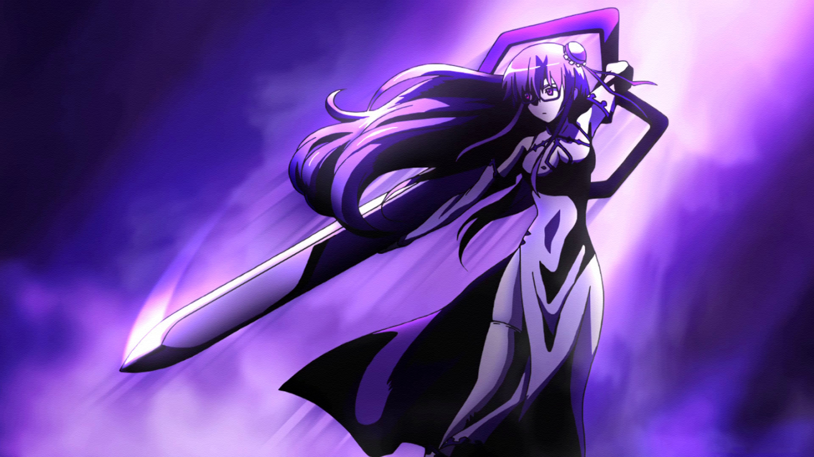
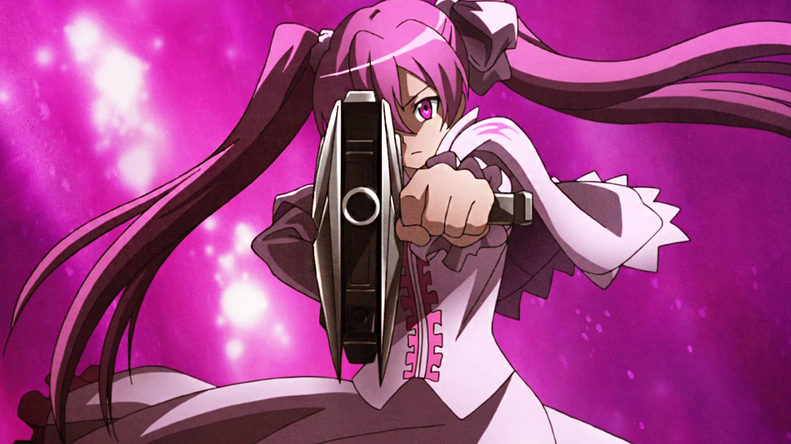
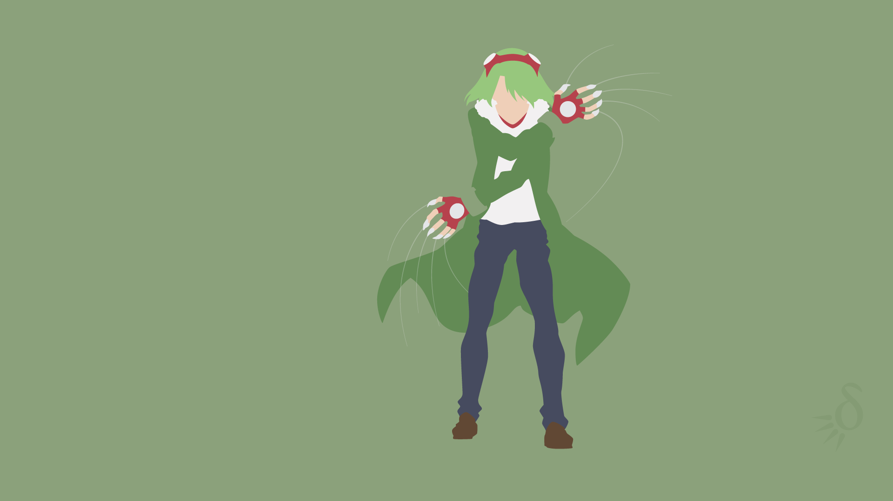
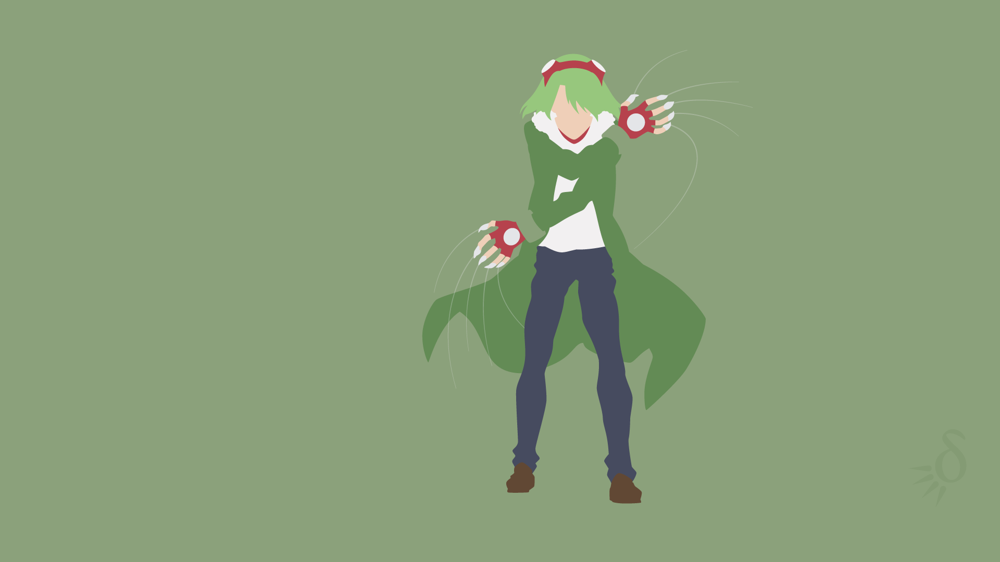
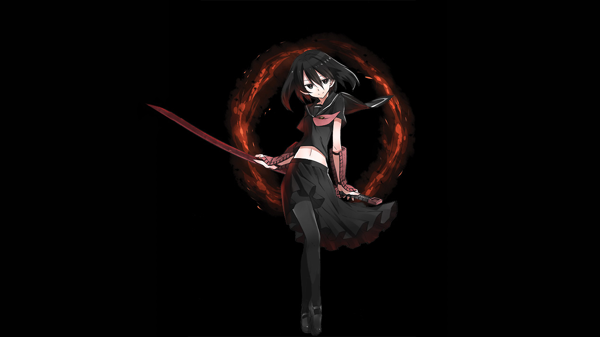
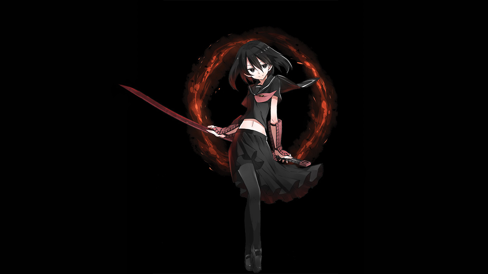

 

 


Akame
Akame é a protagonista feminina de "Akame ga Kill!". Uma guerreira extremamente habilidosa e séria, Akame é uma assassina do grupo Night Raid. Ela utiliza a espada Murasame, uma Teigu mortal que mata com um único corte. Embora pareça fria e distante, Akame se preocupa profundamente com seus companheiros e luta para derrubar o Império corrupto.
Leone
Leone é uma das integrantes mais carismáticas e extrovertidas do Night Raid. Ela é uma lutadora feroz, que utiliza a Teigu "Lionelle", um cinto que lhe concede força sobre-humana e habilidades de regeneração, transformando-a parcialmente em um leão. Leone tem uma personalidade alegre e descontraída, sendo muito leal aos seus amigos.
sheele
Sheele é uma membro gentil e um tanto distraída do Night Raid. Ela maneja a Teigu "Extase", uma grande tesoura que pode cortar praticamente qualquer coisa. Apesar de sua natureza desajeitada, Sheele é uma assassina eficaz e possui um forte desejo de proteger aqueles que ama.
Mine
Mine é uma atiradora de elite do Night Raid com uma personalidade forte e temperamental. Ela utiliza a Teigu "Pumpkin", um rifle de precisão que aumenta sua potência quanto maior o perigo que Mine enfrenta. Ela pode ser inicialmente difícil de se aproximar, mas é uma aliada leal e desenvolve um forte vínculo com Tatsumi ao longo da série.
Tatsumi
Tatsumi é o protagonista masculino de "Akame ga Kill!". Ele começa como um jovem ingênuo que deseja salvar sua aldeia da pobreza, mas logo se junta ao Night Raid após descobrir a crueldade do Império. Tatsumi não possui uma Teigu no início, mas eventualmente empunha Incursio, uma armadura que concede força, velocidade e resistência extraordinárias.
Lubbock
Lubbock é um membro inteligente e estratégico do Night Raid, conhecido por sua personalidade descontraída e senso de humor. Ele usa a Teigu "Cross Tail", que consiste em fios indestrutíveis que ele manipula para ataque, defesa e captura. Embora aparente ser descontraído, Lubbock é extremamente leal e possui um forte senso de justiça.
Esdeath
Esdeath é a principal antagonista da série e uma general implacável do Império. Ela é uma guerreira extremamente poderosa que utiliza a Teigu "Demons Extract", que lhe concede a habilidade de controlar o gelo. Esdeath é cruel e sádica, mas desenvolve uma obsessão romântica por Tatsumi, o que adiciona uma camada complexa à sua personalidade.
korume
Kurome é a irmã mais nova de Akame e uma antagonista na série. Ela é uma assassina do Império e utiliza a Teigu "Yatsufusa", uma espada que lhe permite controlar os corpos de suas vítimas como marionetes. Kurome é marcada por seu passado traumático e o desejo de se reconectar com sua irmã, o que a torna uma personagem trágica e complexa.
Chesea
Uma personagem de "Akame ga Kill!", Chelsea é uma assassina talentosa que usa disfarces e manipulação para completar suas missões. Ela é astuta, calma e muito confiante em suas habilidades, muitas vezes subestimando seus inimigos. Sua arma imperial, Gaea Foundation, permite que ela se transforme em qualquer pessoa ou animal.